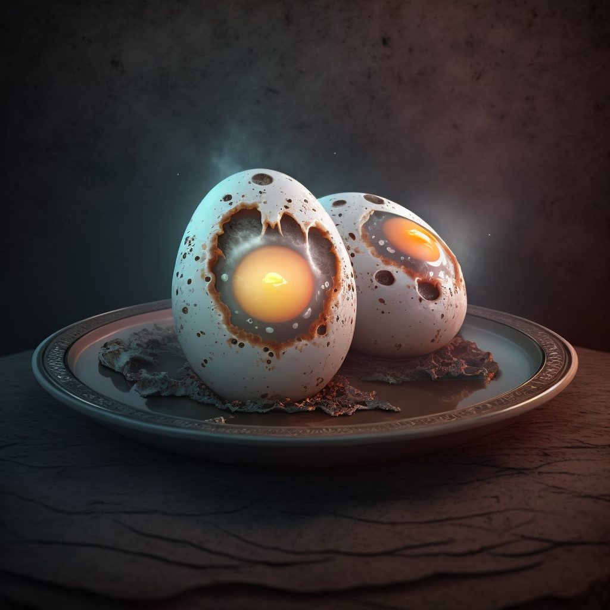

Thraax Sunrise Scramble

Ingredients:
- 4 Thraax Eggs
- 4 Thraax Sausages
- 1 cup of Zorbon Sauce
- 1 tsp. of Gornian Spice Powder
- 1/2 cup of Valerian Cheese, grated
- 1/2 cup of Hestorian Broth
- 1/2 cup of Eltarian Herbs, chopped
Instructions:
- In a pan, cook Thraax Sausages until browned and crispy, then slice into rounds.
- In a separate pan, scramble Thraax Eggs with Hestorian Broth and Eltarian Herbs until fluffy.
- In a bowl, mix together the Zorbon Sauce and Gornian Spice Powder to create the "intergalactic hollandaise".
- On a plate, arrange the scrambled eggs, sausage rounds, and a generous drizzle of the "intergalactic hollandaise".
- Sprinkle with Valerian Cheese and serve with a side of your choice, or with a lighthearted joke like, "Why did the
Thraax cross the intergalactic highway? To get to the breakfast buffet, of course!"
- Enjoy your hilarious and delicious breakfast from another planet!